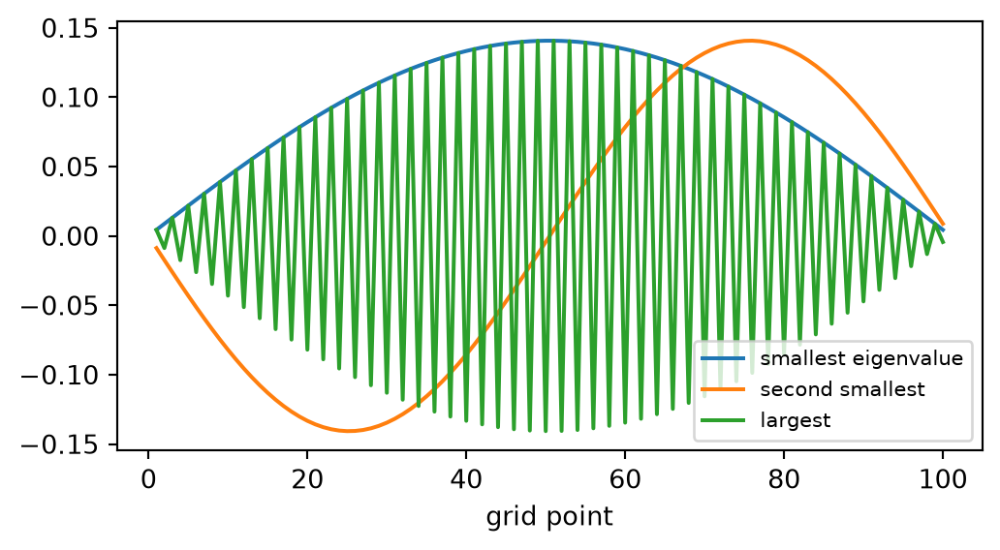
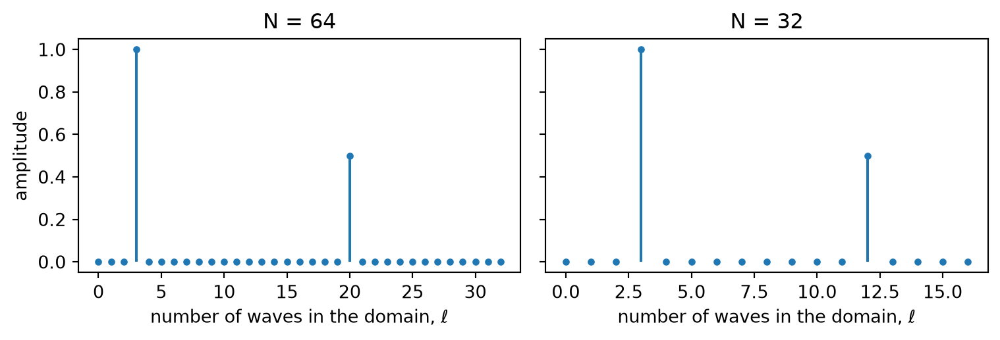
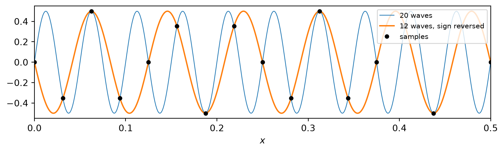

Covers unit 4 of the script. Start in the lab and finish at home.
Problem 1: A model matrix and its eigenvalues (4 points)
Set up the \(N \times N\) model matrix \(A\) with 2 on the main diagonal and \(-1\) on the two neighbouring diagonals for \(N = 100\). Compute its eigenvalues and eigenvectors and compare the eigenvalues with \(\lambda_m = 2 - 2 \cos \left( m \pi / (N + 1) \right)\), \(m = 1, \dots, N\). Plot the eigenvectors belonging to the two smallest and the largest eigenvalue.
Compute the condition number of \(A\) for \(N = 10, 100, 1000\). How does it depend on \(N\)? Explain the dependence with the formula for \(\lambda_m\).
Solution
The code is given twice: step by step, as you would write it, and in a compact form. Both give the same results.
np.linalg.eigh computes the eigenvalues and eigenvectors of a symmetric matrix. It returns the eigenvalues in increasing order and the eigenvectors as the columns of a matrix: eigenvectors[:, 0] (all rows, column 0) belongs to the smallest eigenvalue. Since \(A\) is symmetric and positive definite, its condition number is the ratio of the largest to the smallest eigenvalue (script, unit 4).
import numpy as np # NumPy: arrays, np.linalg, ...import matplotlib.pyplot as plt # plottingdef model_matrix(N): A = np.zeros((N, N)) # N x N matrix of zerosfor i inrange(N): A[i, i] =2# main diagonalif i >0: A[i, i -1] =-1# left neighbourif i < N -1: A[i, i +1] =-1# right neighbourreturn A# a)N =100eigenvalues, eigenvectors = np.linalg.eigh(model_matrix(N))largest_deviation =0.0for m inrange(1, N +1): # eigenvalue number m is at position m - 1 formula =2-2* np.cos(m * np.pi / (N +1)) deviation =abs(eigenvalues[m -1] - formula)if deviation > largest_deviation: largest_deviation = deviationprint("largest deviation from the formula:", largest_deviation)points = []for j inrange(1, N +1): # grid points 1, ..., N points.append(j)fig, ax = plt.subplots(figsize=(6, 3))ax.plot(points, eigenvectors[:, 0], label="smallest eigenvalue")ax.plot(points, eigenvectors[:, 1], label="second smallest")ax.plot(points, eigenvectors[:, N -1], label="largest")ax.set_xlabel("grid point")ax.legend(fontsize=8)plt.show()# b)for N in [10, 100, 1000]: ev = np.linalg.eigvalsh(model_matrix(N)) # eigenvalues only kappa = ev[N -1] / ev[0] # largest / smallest estimate =4* (N +1)**2/ np.pi**2print(f"N = {N:4d}: condition number {kappa:10.1f},"f" 4 (N+1)^2 / pi^2 = {estimate:10.1f}")
largest deviation from the formula: 1.7763568394002505e-15

N = 10: condition number 48.4, 4 (N+1)^2 / pi^2 = 49.0
N = 100: condition number 4133.6, 4 (N+1)^2 / pi^2 = 4134.3
N = 1000: condition number 406095.0, 4 (N+1)^2 / pi^2 = 406095.7
import numpy as npdef model_matrix(N):# np.eye(N, k=1): ones on the diagonal above the main diagonal A =2* np.eye(N) - np.eye(N, k=1) - np.eye(N, k=-1)return AN =100eigenvalues, eigenvectors = np.linalg.eigh(model_matrix(N))m = np.arange(1, N +1)formula =2-2* np.cos(m * np.pi / (N +1))print("max. deviation from formula:", abs(eigenvalues - formula).max())for N in [10, 100, 1000]: ev = np.linalg.eigvalsh(model_matrix(N))print(f"N = {N:4d}: condition number {ev[-1] / ev[0]:10.1f},"f" 4(N+1)^2/pi^2 = {4* (N +1)**2/ np.pi**2:10.1f}")
max. deviation from formula: 1.7763568394002505e-15
N = 10: condition number 48.4, 4(N+1)^2/pi^2 = 49.0
N = 100: condition number 4133.6, 4(N+1)^2/pi^2 = 4134.3
N = 1000: condition number 406095.0, 4(N+1)^2/pi^2 = 406095.7
a) The eigenvalues agree with the formula to round-off. The eigenvectors are sine waves, \((\vec v_m)_j = \sin (j m \pi / (N + 1))\): half a wave (\(m = 1\)) and one wave (\(m = 2\)) across the domain for the two smallest eigenvalues, and the \(2 \Delta x\) wave, which changes sign from point to point, for the largest (\(m = N\)). An eigenvector is determined only up to a factor, so eigh may return it with the opposite sign.
b) The smallest eigenvalue belongs to \(m = 1\). With \(\cos \theta \approx 1 - \theta^2/2\) for small \(\theta = \pi / (N + 1)\),
The largest belongs to \(m = N\), where \(N \pi / (N + 1)\) is close to \(\pi\) and \(\cos \approx -1\), so \(\lambda_N \approx 4\). The condition number is
which the computation confirms. It grows as \(N^2\): refining the grid by a factor of 10 makes the system 100 times more sensitive to errors.
Points: a) 2, b) 2.
Problem 2: Layered ground (3 points)
Heat conduction through layered ground, \(-(K u')' = f\), has a conductivity \(K\) that changes from layer to layer. With \(K_{j+1/2}\) the conductivity between grid points \(j\) and \(j + 1\), row \(j\) of the discretization reads
with Dirichlet values \(u_0 = u_{N+1} = 0\). For \(K = 1\) this is the model matrix \(A\).
Write down the \(3 \times 3\) matrix \(A_K\) for \(N = 3\), with the four conductivities \(K_{1/2}, K_{3/2}, K_{5/2}, K_{7/2}\). Show that \[
\vec x^T A_K \vec x = K_{1/2} \, x_1^2 + K_{3/2} (x_1 - x_2)^2 + K_{5/2} (x_2 - x_3)^2 + K_{7/2} \, x_3^2
\] and conclude that \(A_K\) is positive definite if all conductivities are positive.
Is \(A_K\) still positive definite (i) if \(K_{5/2} = 0\), an insulating layer inside the domain, and (ii) if \(K_{1/2} = K_{7/2} = 0\), no heat flow across either boundary? If not, give a vector \(\vec x \ne \vec 0\) with \(\vec x^T A_K \vec x = 0\). Check your answers with the eigenvalues for conductivities of 1 and 0.
Solution
a) Collecting the coefficients of \(u_1, u_2, u_3\) in rows 1 to 3 (the boundary values are zero) gives
which is \(\vec x^T A_K \vec x = \sum_{i,j} (A_K)_{ij} x_i x_j\): the diagonal entries multiply \(x_i^2\), each off-diagonal entry appears twice. If all \(K > 0\), every term is \(\ge 0\), so \(\vec x^T A_K \vec x \ge 0\). It is zero only if every square vanishes: \(x_1 = 0\), then \(x_2 = x_1 = 0\) and \(x_3 = x_2 = 0\). Hence \(A_K\) is positive definite. This is the script’s argument for the model matrix, with weights.
b) (i) With \(K_{5/2} = 0\) the form is \(K_{1/2} x_1^2 + K_{3/2} (x_1 - x_2)^2 + K_{7/2} x_3^2\). It vanishes only for \(x_1 = 0\), \(x_2 = x_1 = 0\) and \(x_3 = 0\): still positive definite. The insulating layer splits the domain into two parts, but each part still touches a Dirichlet boundary that fixes its temperature. The eigenvalues for \(K = (1, 1, 0, 1)\) are \(0.38\), \(1\) and \(2.62\), all positive.
(ii) With \(K_{1/2} = K_{7/2} = 0\) only \(K_{3/2} (x_1 - x_2)^2 + K_{5/2} (x_2 - x_3)^2\) remains, which is zero for every constant vector, for example \(\vec x = (1, 1, 1)^T\). \(A_K\) is only positive semidefinite and singular. Physically: if no heat crosses the boundaries, adding a constant to the temperature changes nothing, as for Neumann or periodic boundaries in the script. The eigenvalues for \(K = (0, 1, 1, 0)\) are \(0\) (to round-off), \(1\) and \(3\).
import numpy as npdef layered_matrix(K):# K = [K_1/2, K_3/2, ..., K_N+1/2], so N = len(K) - 1 N =len(K) -1 A = np.zeros((N, N))for j inrange(N): A[j, j] = K[j] + K[j +1]if j >0: A[j, j -1] =-K[j]if j < N -1: A[j, j +1] =-K[j +1]return Aprint("(i) ", np.linalg.eigvalsh(layered_matrix([1, 1, 0, 1])))print("(ii)", np.linalg.eigvalsh(layered_matrix([0, 1, 1, 0])))
(i) [0.38196601 1. 2.61803399]
(ii) [3.92505363e-17 1.00000000e+00 3.00000000e+00]
Points: a) 2, b) 1.
Problem 3: A spectrum and aliasing (3 points)
The signal \[
u(x) = \sin (2 \pi \cdot 3 x) + 0.5 \sin (2 \pi \cdot 20 x)
\] on \(0 \le x < 1\) contains 3 and 20 waves in the domain. It is sampled at \(N\) points \(x_j = j / N\), \(j = 0, \dots, N - 1\).
For \(N = 64\), compute the amplitude spectrum with np.fft.rfft as in the script (amplitude \(2 |\hat u_\ell|\) for \(\ell\) waves in the domain) and plot it. Which waves do you find, and with which amplitudes?
Repeat for \(N = 32\). Where does the short wave appear now? Explain the number you find, and plot the samples together with the two candidate waves. From which \(N\) on is the spectrum correct?
Solution
import numpy as npimport matplotlib.pyplot as pltdef signal(x):return np.sin(2* np.pi *3* x) +0.5* np.sin(2* np.pi *20* x)def spectrum(N): x = np.arange(N) / N # x_j = j / N amplitude =2* np.abs(np.fft.rfft(signal(x))) / N ell = np.arange(len(amplitude)) # 0, 1, ..., N/2 waves in the domainreturn ell, amplitudefig, axes = plt.subplots(1, 2, figsize=(8, 2.8), sharey=True)for ax, N inzip(axes, [64, 32]): ell, amplitude = spectrum(N) ax.stem(ell, amplitude, basefmt=" ", markerfmt=".") ax.set_title(f"N = {N}") ax.set_xlabel(r"number of waves in the domain, $\ell$") peaks = amplitude >1e-8# ignore round-offprint(f"N = {N}: waves {ell[peaks]}, amplitudes {amplitude[peaks].round(3)}")axes[0].set_ylabel("amplitude")plt.tight_layout()plt.show()# b) samples for N = 32 with the true and the aliased short waveN =32x = np.arange(N) / Nxf = np.linspace(0, 1, 1000)fig, ax = plt.subplots(figsize=(8, 2.5))ax.plot(xf, 0.5* np.sin(2* np.pi *20* xf), lw=0.8, label="20 waves")ax.plot(xf, -0.5* np.sin(2* np.pi *12* xf), label="12 waves, sign reversed")ax.plot(x, 0.5* np.sin(2* np.pi *20* x), "ko", ms=4, label="samples")ax.set_xlim(0, 0.5)ax.set_xlabel("$x$")ax.legend(fontsize=8, loc="upper right")plt.tight_layout()plt.show()
N = 64: waves [ 3 20], amplitudes [1. 0.5]
N = 32: waves [ 3 12], amplitudes [1. 0.5]


a) With \(N = 64\) the shortest representable wave has \(N/2 = 32\) waves in the domain. Both waves are below this limit, and the spectrum shows exactly two peaks: amplitude 1 at \(\ell = 3\) and 0.5 at \(\ell = 20\).
b) With \(N = 32\) the limit is \(N/2 = 16\) waves, and the 20 waves are too short. The peak appears at \(\ell = 12\) with amplitude 0.5. At the grid points \(x_j = j/N\) a wave with \(\ell\) and one with \(\ell - N\) waves are identical, because \(e^{2\pi i (\ell - N) j / N} = e^{2\pi i \ell j / N} e^{-2\pi i j}\) and \(e^{-2\pi i j} = 1\). So 20 waves look like \(20 - 32 = -12\) waves, and the sine is odd, \(\sin(-\alpha) = -\sin \alpha\): at the samples \(0.5 \sin (2\pi \cdot 20 x_j) = -0.5 \sin (2\pi \cdot 12 x_j)\), a wave with 12 crests and reversed sign, as the plot shows. This is aliasing: the amplitude is not lost, it is assigned to the wrong scale.
The spectrum is correct if the 20 waves lie below the limit, \(20 < N/2\), that is for \(N > 40\). (At exactly \(N = 40\) the sine has its zeros on the grid points, \(\sin (\pi j) = 0\), and disappears from the samples altogether.)